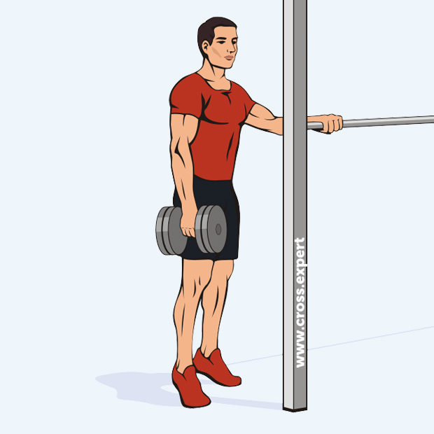
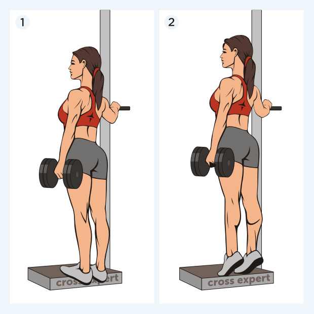
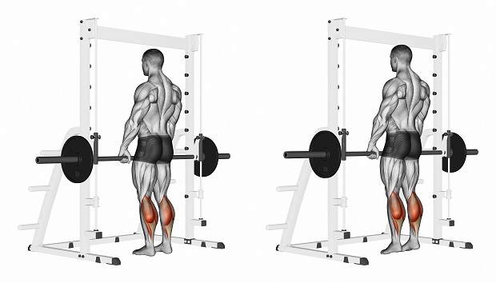

Подъем на носки стоя в тренажёре
Подъем на носки стоя — самое эффективное упражнение для развития икрононожных мышц. Его основное преимущество состоит в том, что мы можем максимально растянуть икры в нижней точке амплитуды и статически сократить в верхней точке. Это намного сложнее, чем кажется на первый взгляд. Многие новички делают это упражнение неправильно: подбирают огромный рабочий вес и работают в минимальной амплитуде, не фокусируясь на изолированной проработке икр. А зря. Так вы получите максимум 10% пользы от этого упражнения. Если хотеть извлечь максимальный результат, работать нужно по-другому. Это будет тяжело и больно, но оно того стоит. Как это сделать правильно — читайте в нашей статье.
Суть и польза упражнения
Это упражнение — ваше орудие №1 в борьбе за объёмную голень. Его можно делать во многих вариациях: с гантелями, со штангой на плечах, в Смите или специальном тренажёре. Разница, конечно, есть, но о ней мы расскажем чуть позже. Все остальные упражнения на икроножные мышцы, по сути, являются производными от подъема на носки стоя. Тренируя икры в тренажёре для жима ногами, вы в точности повторяете биомеханику подъема на икры стоя в тренажёре. Разница заключается лишь в отсутствии осевой нагрузки на позвоночник. Упражнение из золотой эры бодибилдинга «ослик» — по сути тот же самый подъем на носки стоя, но из-за наклона корпуса вперёд нагрузка немного отличается.
Достаточно выполнять подъем на носки стоя раз в неделю, например, в конце тренировки ног. Это будет вполне достаточно для их гипертрофии.
Не стоит забывать о том, что икроножные мышцы выполняют функцию стабилизатора во время базовых упражнений, вроде становой тяги и фронтальных приседаний со штангой. Чем сильнее мышцы-стабилизаторы, тем больший вес вы сможете поднять. Поэтому икры стоит тренировать не только тем, кто хочет иметь красивую мускулистую голень, но и тем спортсменам, кто ставит для цель увеличивать рабочие веса в базовых движениях. Все опытные пауэрлифтеры и кроссфит-атлеты находят время в своём тренировочном графике для тренировки икр.
Противопоказания к выполнению
Во время этого упражнения создаётся сильная нагрузка на подколенное сухожилие. Тем, кто уже имел с ним проблемы, например, от фронтальных приседаний, оно не рекомендуется.
Также в этом упражнении присутствует небольшая осевая нагрузка на позвоночник, особенно это касается вариаций со штангой на плечах, в Смите и в тренажёре. Насколько она большая, зависит от рабочего веса. В этом упражнении не рекомендуется использовать большой рабочий вес, так вам будет сложнее сфокусировать внимание на работе икр. Но если проблемы с позвоночником действительно серьёзные (грыжи и протрузии в шейном отделе, сильной кифоз или остеохондроз), лучше тренировать икры в тренажёре для жима ногами. Биомеханика движения практически такая же, но зато вы убережете спину от нежелательной нагрузки.
Как правильно выполнять:
Самая распространённая вариация — подъем на носки стоя в тренажёре. Сейчас станок для икр есть практически в каждом тренажёрном зале. Основное его преимущество заключается в том, что нам удобно растягивать мышцы в нижней точке амплитуды, так как между полом и платформой для ступней остаётся ещё достаточно расстояния.
- Исходное положение для выполнения упражнения — стоим на платформе только носками стопы, пятки опускаем вниз и стараемся, чтобы они максимально «провалились».Чувствуете растяжение в икрах? Значит, все правильно. Это наша исходная точка, досюда нужно доводить каждое повторение.
- В нижней точке на несколько секунд задерживаемся, чтобы дополнительно растянуть икроножные мышцы. Упражнение выполняется в максимально возможной амплитуде.
- Далее снова поднимаемся на носки, при этом пытаемся подняться как можно выше.
- Наверху делаем пиковое сокращение.
Если получается удерживать пиковое сокращение 3-4 секунды — очень хорошо. После 6-8 повторений в таком режиме вы почувствуете сильный пампинг. Ещё через 5 — сильную боль. Наша задача — продолжать работать до полнейшего отказа. Когда вы уже не можете делать максимальное растяжение и пиковое сокращение, сделайте ещё несколько неполных повторений, чтобы окончательно добить мышцы. Это не относится не только к подъемам на носки стоя в тренажёре, но и к другим вариациям этого упражнения.